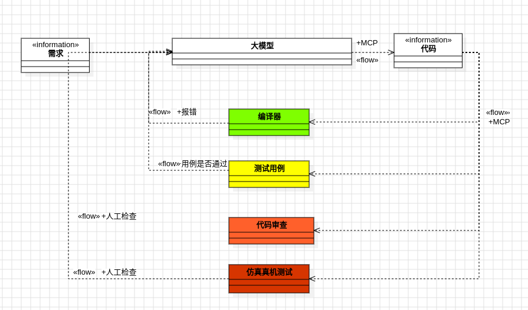
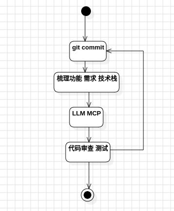
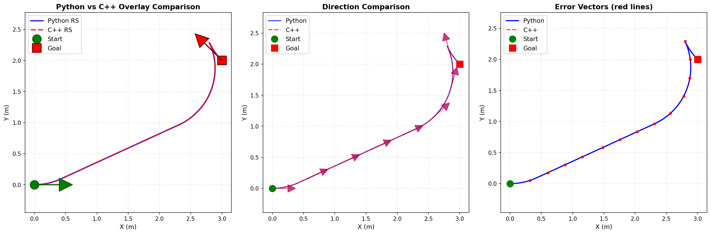

Introduction
经过两个月的在开发流程中引入了AI coding， 越来越觉得AI coding 是未来的开发新的范式, 极有可能改变开发的流程与构建的方式。因为除了程序几乎可以构建任何数字系统， 结合AI coding后还引入了自递归的结构(AI 可以生成代码， 也可以对已有代码进行改进)， 开发的难度会急剧降低。软件工程中所谓的“银弹”似乎借由AI coding到来了。
概念
在AI coding的时代，很多传统将被颠覆 , AI大模型的发展日新月异， 普通人的机会在与利用AI进行应用层的创新。目前对于AI 及AI coding的概念认知如下:
- AI编程依赖于大模型的水平， 目前的大模型可以看做是一种信息压缩与提取的技术(一座自动加工组合已有知识/经验的图书馆)
- 目前的AI大模型没有真假判断能力, 所以我们要在流程上保证其正确性(与测试用例结合)
- 目前AI coding都是被动触发， 多关注主动触发工具(agent, MCP)
- 重新发明(定制)轮子的成本变得非常低, 快速定制
- 不必依赖一种模型， 而是使用通用的工具集成不同的AI模型做合适的工作
- 不仅应不局限于不同的模型， 而且应该给不同的模型不同的agent的角色， 协调他们共同工作
方法论
principle
- 减少人工介入
- 控制修改范围
- 兼容不同的模型切换
- 本地化prompt, 流程
- spec-driven, test-driven
- 利用docker进行环境构建(保护本机)
测试驱动AI编程

基于前面的概念及方法原则， 这里提出一种将软件工程中的测试驱动开发与AI coding相结合的方法， 暂且叫做基于测试驱动的AI prompt开发流程。相信很多用过AI coding 的人都有一种痛苦的经验: 一是与AI coding工具需要进行多轮交互， 而且要不停纠正撤回, 最后的成功构建的概率不高; 二是AI coding工具经常会破坏我们正确的code base, 或者进行一些冗余实现。 而有了测试用例的加持， 我们可以借由测试用例检查我们的需求是否被正确的实现， 而且可以保证已有的功能不被破坏， 与此同时由于AI coding工具可以读取终端文本输出， 在AI coding 工具在实现我们提出的需求的时候， 可以一次构建出能够正确编译， 功能大体正确的代码。而进入代码审查或仿真测试的阶段就必须认为参与了， 或许AI coding可以进行一部分代码审阅的工作， 但是最终对于代码的所有者来说， 理解code base还是目前阶段有必要的（后面的维护需求） 基于以上讨论， AI coding我们有三重保障:- 利用git版本管理， 随时可以撤销ai的所有改动
- 利用compiler, 迫使AI生成能够编译通过的代码
- 利用test case, 给AI coding提供判断对错的工具， 引导AI coding 一次生成功能正确的代码
使用场景
善于做什么
- chat(无需在编辑器和网页之间切换， 复制粘贴)
- 代码补全
- 简单函数及接口调用
- 语法修正, 修正编译\运行错误
- 开发工具及脚本进行快速验证
- 非核心代码(测试脚本， 测试用例编写)
- 简单逻辑代码(生成或从一种语言翻译到另外一种语言)
- 简单成熟算法(生成或从一种语言翻译到另外一种语言)
不善于做什么
- 复杂算法
- 性能调优
- 隐蔽bug查找修正
- 对一个问题的深度思考
适用场景
- 代码补全
- 新写工具/项目
- 现有项目理解/维护/拓展
- 代码审阅(coderabbit)
工具
代码补全
- windsurf
- copilot
- cursor
- continue(还可以组合各种模型)
- zed
IDE
anti-gravity
- 安装vpn需要开tun模式
- 登录需要vpn开全局模式
- zsh补全受到干扰:
sudo chown root:root /usr/share/zsh/vendor-completions/_antigravityCLI
Aider(pair programming)
- 特点: 可以通过ide注释主动触发
使用deepseek api登录
aider --model deepseek --api-key deepseek=<key> --watch-filesclaude
- 优点: 可以在大型项目中修改代码
- 缺点: 账号容易封, 贵
Cluade code api配置配置 API 接入其他模型
将以下命令添加到您的 shell 配置文件中（例如/.bashrc 或 ~/.zshrc），然后重新加载您的 shell 或打开一个新的终端窗口。
export ANTHROPIC_BASE_URL="https://api.zhizengzeng.com/anthropic"
export ANTHROPIC_AUTH_TOKEN=“token_key_string”
export ANTHROPIC_MODEL=你希望使用的model
export ANTHROPIC_SMALL_FAST_MODEL="deepseek-chat"代码补全推荐模型
MCP
待补充
router
待补充
cline
本地模型进行代码补全
ollama安装
curl -fsSL https://ollama.com/install.sh | sh模型拉取到本地
ollama run deepseek-coder:6.7bcontinue中进行配置
models:
- name: Qwen3 without Thinking for Autocomplete
provider: ollama
model: qwen3:4b # qwen3 is a thinking-switchable model
roles: - autocomplete
requestOptions:
extraBodyProperties:
think: false # turning off the thinking关注硬件: AMD AI MAX 395(支持统一内存， 最高128G)
模型
大语言模型对比
| Codex | Claude | Gemini | Deepseek | GLM | |
|---|---|---|---|---|---|
| - 大型项目 - 不啰嗦， 成功率高 - 版本管理欠缺， 经常回退失败 - 需要与git结合使用 | - 大型项目 - plan分布实施， 工具完善 - 对原生账号使用不友好， 经常被封 | - 深度研究 | - 国产开源 - api接口便宜 - 无生图能力 | - 国产开源 - 支持按月订阅模式(18元/月) - 有生图能力 |
系统构建
Practice
典型工作流程

Senario 1(算法翻译)
图示为从网上找到的ReepSheep 曲线生成算法(一种考虑car-like运动约束的且允许倒退的曲线轨迹生成方法)， 由于只有python代码， 需要利用AI coding 将python脚本翻译为C++封装类。我们的思路是让Ai coding 将已有代码翻译为C++后， 将python脚本与C++版本的生成曲线画在一张图表上， 并统计平均误差作为用例， 让AI coding无需人工干预， 即可一次生成。

花了一下午完成python脚本翻译为C++封装类， 如果自己写需要2~3天
Senario 2(非核心代码编写, 工具类， 测试类)
工具类(文件缓存工具)
提示
- 对于/home/hal/Documents/workspace/ros2_ws/src/apparition/include/alg_lib/hybridAstar_components/collision_detection.hpp中的collision_lookup的数据， 需要缓存到文件， 需求: 1. 希望在算完后缓存到本地文件， 然后检测本地文件是否存在；如果存在， 跳过在线预计算。然后对文件进行校验加载 2. 使用c++进行工具构建， 希望所有的实现都放到一个cache_file.hpp文件当中，放到/home/hal/Documents/workspace/ros2_ws/src/apparition/include/utils下面 3.缓存文件位置放到.ros下面 4. 文件加载性能要快 5.考虑后期兼容不同的数据类型
- 先复述需求及你实现的思路
需求整理：
- 目前 HybridAstar 的 collision_lookup 每次构造都在线预计算，耗时较长。希望第一次算完后把 lookup 数据缓存到本地，下次启动先检查本地缓存；若文件存在且校验通过，直接加载，不再重复预计算。
- 缓存实现要用 C++ 写成工具模块，全部代码放入 apparition/include/utils/cache_file.hpp，方便其它地方复用，考虑未来支持多种数据类型。
- 缓存文件存放在用户家目录的 .ros 下面（如 ~/.ros/***），同时要保证加载性能高、包含基本校验，避免损坏文件导致崩溃。
- 只改 collision_detection、lookup 等使用侧，满足“检测文件→加载或写入”的流程。
实现思路：
1. 在 utils/cache_file.hpp 中封装一个轻量 cache 工具，提供：
- 生成缓存路径（默认 ~/.ros，可带自定义文件名/前缀）。
- 写入函数：接受结构体/数组的二进制数据，加上版本号、数据类型标识、尺寸等头部信息后落盘。
- 读取函数：先校验文件存在，再比对头部（版本、数据尺寸等），都通过才映射/读取到内存，失败返回 false。
- 未来扩展可通过模板或类型标签支持不同数据类型。
2. 在 collision_detection.hpp 构造函数里：
- 先根据底盘参数、MapConfig 计算一个 cache key（例如 hash(chasis footprint、resolution、theta_sample_num、positionResolution 等)）。
- 调用 cache 工具尝试加载 collision_lookup；如果成功，直接用；若失败则调用 Lookup::collisionLookup 在线生成，并写回缓存。
3. 为了加载快，可以直接写入连续内存（先 serialize 每个 RelativePoint 数组长度，再写入点数据），或使用简单的二进制格式，配合 std::vector resize + read.
4. 错误处理：若读/写出现异常，日志提醒并退回到在线生成。
接下来将按这个方案实现：先新增 cache_file.hpp，再修改 collision_detection 逻辑接入。-
可以实施， 我希望实现utils/cache_file.hpp后为它在/home/hal/Documents/workspace/ros2_ws/src/apparition/test/lookup_collision_tests下写一个测试用例， 统计写入和加载性能；完成后运行测试用例表明功能正常
-
在/home/hal/Documents/workspace/ros2_ws/src/apparition/docs下面更新一个utils.md的文档， 说明该模块的设计思路及说明， 同步更新test下面的README.md文档
测试用例中文件的加载由2Min缩短到6ms 修改流程总耗时1 hour